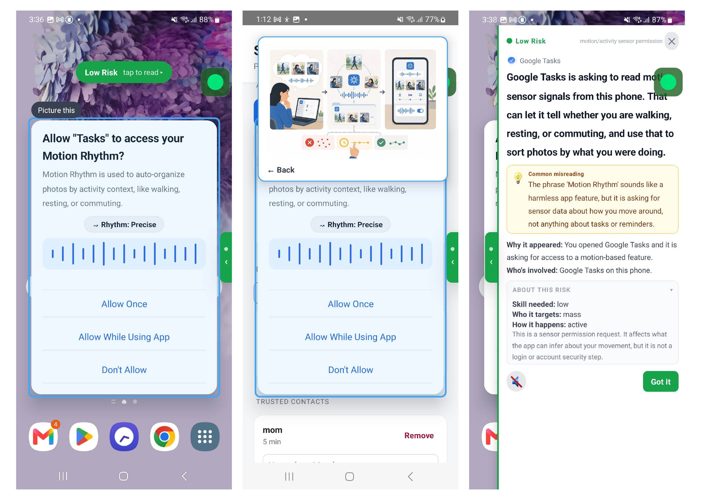

Research Project · Now Recruiting
Security and Privacy Notifications with Smartphone AI-Assistants Study

Overview
This study builds directly on prior work finding that adults with Intellectual and Developmental Disabilities (IDD) can encounter distinct challenges understanding security and privacy notifications, including misreading notification purpose, unfamiliar terminology, and uncertainty about what each available action means. Where that work characterized the problem, this project develops and evaluates an AI-powered smartphone overlay application designed to address it: intercepting notifications in context, classifying them, and providing a plain-language explanation grounded in what the user is most likely to misunderstand. Our earlier research found that security and privacy warnings on phones and computers can be confusing for some adults with intellectual and developmental disabilities, not just because of technical words, but because it can be hard to know who is involved, what will actually happen, and what the safe choice is. This project builds a smartphone tool to help. When a warning pops up, the tool explains it in plain language, tells you what each button actually does, and helps you decide what to do.
A key design commitment is that the assistant surfaces information rather than making decisions for the user. It explains what is happening and what each option means, without recommending a specific action. An interdependence feature allows the user to send a screenshot and question to a trusted contact, view that person's response, and make the final choice themselves, preserving the collaborative decision-making model we observed as central to how adults with IDD navigate digital security in practice.The tool is designed so that the user always makes the final choice. It doesn't tell you what to press. If you're not sure what to do, there's an "ask for help" button that lets you send a question to someone you trust. You see their answer, think it over, and decide for yourself. This reflects how people with IDD often make decisions in real life: with trusted support, not alone.
System Overview
The assistant is an Android overlay application. When the user taps the floating button, the app reads the foreground notification's context using the Android Accessibility Service API, capturing visible text, UI element types, available button labels, and whether the notification is system-level or in-app. This structured information, optionally supplemented by a screenshot for apps with sparse accessibility trees, is sent to a large language model (Gemini) which classifies the notification type and returns a structured JSON response. That response is rendered as a bottom-sheet overlay and read aloud via on-device text-to-speech, keeping all speech processing local to the device.We built an Android app that stays on top of whatever you're doing on your phone. When a security or privacy warning appears, you tap a button and the app reads what's on your screen and figures out what kind of warning it is. It then shows you a simple explanation at the bottom of the screen and reads it out loud. Everything works on the phone itself. No audio is sent to a server.
The response overlay includes: a plain-language explanation (1-2 sentences, approximately grade 5 reading level) addressing the most likely misreading the user brings to the notification; an ordered list of each available action with a description of what actually happens and whether it can be undone; a color-coded risk indicator; and a "Learn More" expansion for additional threat context. The interdependence feature sends a cropped screenshot and a user-typed question to a trusted contact via push notification; the contact's text response is displayed in the app, and the user then dismisses or acts on their own.The explanation screen shows: a short, plain-language explanation of what the warning actually means; a list of the buttons you can press and what each one will do; a color indicator showing how serious it is; and a "Learn More" option if you want to know more. The "ask for help" feature sends a photo of the warning and your question to someone you trust. You see their reply, and then you decide what to do.
Theoretical Frameworks
The assistant's explanation pipeline is grounded in three complementary frameworks applied in sequence. MoRA (Method of Risk Assessment) drives the threat assessment component, characterizing each notification along three dimensions: the level of attacker expertise required, whether the threat is opportunistic or targeted at a specific user, and whether harm requires user action or occurs passively. C-HIP (Communication-Human Information Processing) provides a comprehension-failure diagnosis: the system explicitly identifies the most likely misreading the user brings to the given notification, based on task context, interface context, and population-specific patterns from prior work, and surfaces that belief gap as the primary content of the plain-language explanation. TETs (Taxonomy of Electronic Trust Signals) specifies what each response must include: an indication of cause (why this notification appeared right now), an indication of source (who is specifically involved, not just "third parties"), and a reliability signal (acknowledging uncertainty when the model is not confident in its assessment).We designed the app using three research frameworks that help us figure out what makes security warnings confusing and what information people actually need. The first framework helps the app assess how serious a threat is. The second helps the app identify what people are most likely to misunderstand, and then address that directly. The third makes sure the app always answers three key questions: why is this warning appearing right now, who exactly is involved, and how confident is the app in its explanation.
Simulated Test Notifications
Participants encounter seven simulated security and privacy notifications embedded in a naturalistic task flow. Each notification represents a distinct type commonly found on Android devices.In the study, participants see seven different types of security and privacy warnings, like ones they would actually see on an Android phone.
AI Support Assistants
Five AI-powered support tools were developed and evaluated, each targeting a distinct explanation or action-support function within the overlay interface.We built five different AI tools, each designed to help in a different way when a security or privacy warning appears.
Study Design
The study presents participants with a set of security and privacy notifications spanning several common types, including permission requests, spam alerts, security warnings, account alerts, cookie consent dialogs, and two-factor authentication prompts, encountered naturally within a simulated task flow on a study device. Each notification follows a consistent structure: the participant first describes what they notice and think before engaging the assistant; they are then invited to open the overlay; and afterward they are asked what they understood from the assistant's response. If a participant gets stuck at any point, they may use the in-app "ask for help" feature or indicate they need a break. The researcher does not provide hints or guidance on what action to take.In the study, participants use a phone and encounter several common types of security and privacy warnings while doing everyday tasks, like permission pop-ups, spam warnings, and login alerts. For each one, we first ask what they think before they open our tool. After they use the tool, we ask what they understood. If they get stuck, they can use the "ask for help" button in the app. The researcher doesn't give hints. We want to see how the tool actually helps on its own.